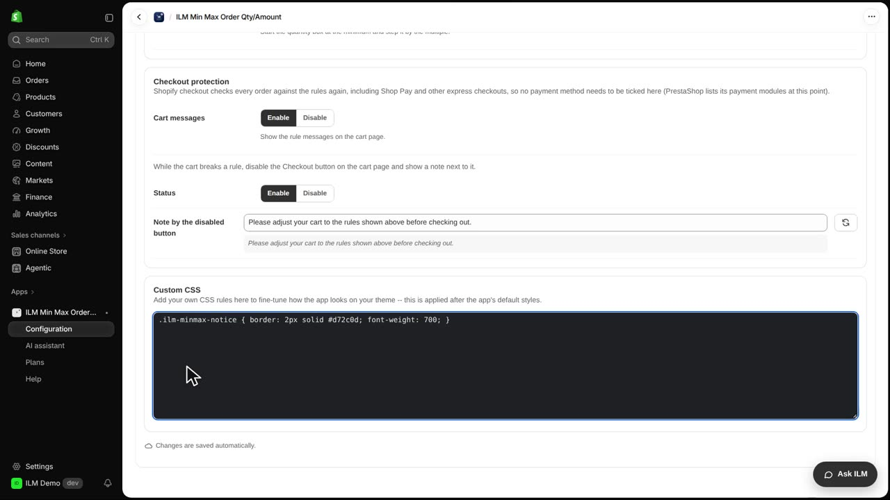
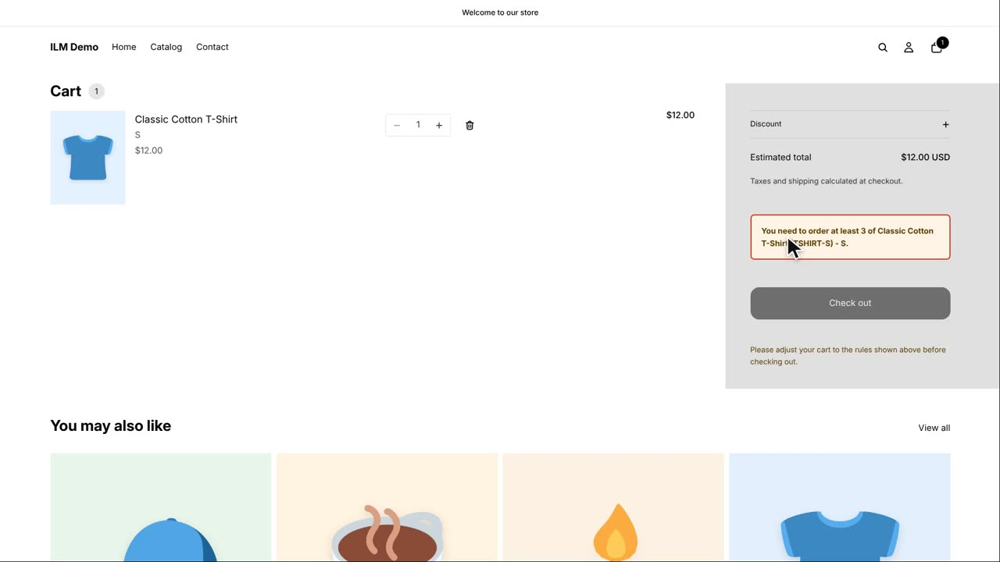

Custom CSS lets you fine-tune how the app's messages look inside your theme, without touching your theme code. If the default notice blends into your design or is too easy to miss, a few lines of CSS make it stand out. In this lesson we set a minimum of three Classic Cotton T-Shirts, then give the cart message a red border and bold text. You will see the cart before and after the change.
First we look at the cart as it is now. The shopper has one Classic Cotton T-Shirt in the cart, and the app shows its notice there. This is the plain default look you are about to restyle.
Now open Configuration, then the Advanced tab, and scroll down to the Custom CSS field. The class of the cart message is ilm minmax notice, so we type a rule for that class: a two pixel solid red border and bold font weight. The field saves as you type, so there is no save button to press.

Back on the cart, reload the page. The same notice now has a red border and bold text, so the shopper cannot miss it. Nothing else in your theme changed, only the app's message.
